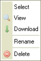

Tiedostoruutu listaa kansiossa sijaitsevat tiedostot.
Tiedostoruutu voidaan esitt瓣瓣 kahdella eri tavalla, riippuen CKFinderin asetuksista (katso "Asetukset"). Ohessa vertailu "Esikatselukuva" ja "Luettelo" -n瓣kym瓣st瓣 samalle kansiolle:

Napsauta tiedostoa valitaksesi sen. Kun osoitin on tiedoston p瓣瓣ll瓣, tiedostoalue muuttaa v瓣ri瓣瓣n. Valitun tiedoston taustan v瓣ri muuttuu, yleens瓣 siniseksi.
Tiedoston edistyneempiin toimintoihin p瓣瓣set "pikavalikosta". Seuraavat toiminnot ovat valittavissa:

Huom: Jotkin pikavalikon valinnat voivat olla kytkettyn瓣 pois, mik瓣li p瓣瓣k瓣ytt瓣j瓣 on n瓣in valinnut.
Valitse tiedosto napsauttamalla "Valitse"-toimintoa.
Napsauta "N瓣yt瓣" esikatselleksallesi tiedosta selaimessa. Kaikentyyppisi瓣 tiedostoja ei voida n瓣ytt瓣瓣 selaimessa, mutta kuvat, teksti ja PDF-tiedostot (Adobe Portable Document Format) voidaan. Muissa tapauksissa selain kysyy, mill瓣 sovelluksella haluat tiedoston avata.
Ladataksesi tiedoston, napsauta "Lataa"-nappia. Selain pyyt瓣瓣 esitt瓣m瓣瓣n paikallisen kansion, johon haluat tiedoston ladata.
Napsauta "Uudelleennime瓣"-nappia pikavalikosta antaaksesi tiedostolle uuden nimen. N瓣kyviin ilmestyy ikkuna, joss lukee tiedoston nykyinen nimi. Anna uusi nimi ja kuittaa.
Kansio- ja tiedostonimiss瓣 ei voi k瓣ytt瓣瓣 kaikkia merkkej瓣. T瓣m瓣 on k瓣ytt繹j瓣rjestelm瓣kohtaista. Esim. : \ / : * ? " < > |
Huom: Kun uudelleennime瓣t kansion, linkin tai mediatiedoston, jota k瓣ytet瓣瓣n jollain toisellakin sivulla, toisen sivun linkit rikkoontuvat. Ole siis varovainen toimenpiteen suhteen.
Poistaaksesi tiedoston, napsauta "Poista" pikavalikossa. N瓣kyviin ilmestyy ikkuna, jossa kysyt瓣瓣n varmistusta toimenpiteelle.
Huom: Kun poistat kansion, linkin tai mediatiedoston, jota k瓣ytet瓣瓣n jollain toisellakin sivulla, toisen sivun linkit rikkoontuvat. Ole siis varovainen toimenpiteen suhteen.